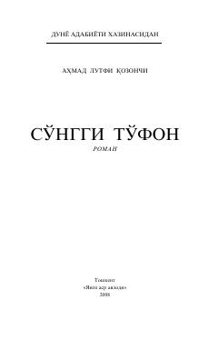

STOg'ir sinovlar va zulm ostida yashagan ona-bolaning taqdiri haqidagi ta'sirli roman.
Roman oiladagi zulm, mehrsizlik va og'ir sinovlarga bardosh bergan ona va uning o'g'li Hasan taqdiri misolida insoniy tuyg'ularni tarannum etadi. Asarda yomonlik va ezgulik kurashi, ona duosining kuchi hamda Olohning har bir bandasiga mehribon ekanligi ta'kidlanadi.